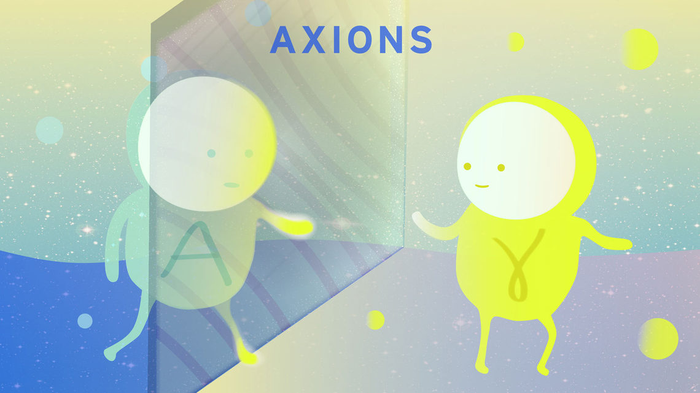

Axions/Ultra-light Dark Matter
QCD axion is a hypothetical elementary particle postulated by the Peccei–Quinn theory in 1977 to resolve the strong CP problem in quantum chromodynamics (QCD). It is a pseudo-Nambu–Goldstone boson left over from spontaneous breaking of the Peccei–Quinn symmetry. Despite its invention for solving particle physics problems, QCD axion appears to be a natural candidate for cold dark matter.
Axion is a classical CDM candidate and theoretically will not introduce any difference to the large-scale structure compared to WIMP-like candidates. However, in some formation scenarios of axions, small scale isocurvature fluctuations can be sourced and could leave unique astrophysical fingerprints.
Relavant projects:
-
Axion miniclusters
In the post-inflationary scenario, the axion field can take different values within patches that are initially out of causal contact, but that today populate the volume enclosed by our Hubble horizon. In this scenario, isocurvature fluctuations in the PQ field sourced in this way will lead to the formation of Earth-mass miniclusters. We aim at building a semi-analytical model to predict the relic abundance of these objects in the Milky Way environment and simulating potential observables. See our recent paper for detail.
-
Ultra-light Axion-like particles, Fuzzy dark matter
A natural extension of axions to lower mass limit is fuzzy dark matter, whose mass can be as low as 10-22eV. Quantum mechanical effects start to matter even at galactic scales (the de Broglie wavelength λ ∼ kpc). This could have implications for solving small-scale "crisis" of ΛCDM. In addition, the effective quantum pressure from fuzzy dark matter could wash out small-scale fluctuations in the initial power spectrum and affect early structure formation. For example, a relevant study on galaxy formation in Bose-Einstein Condensed dark matter (BECDM) that I have contributed.